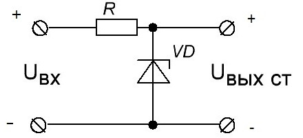
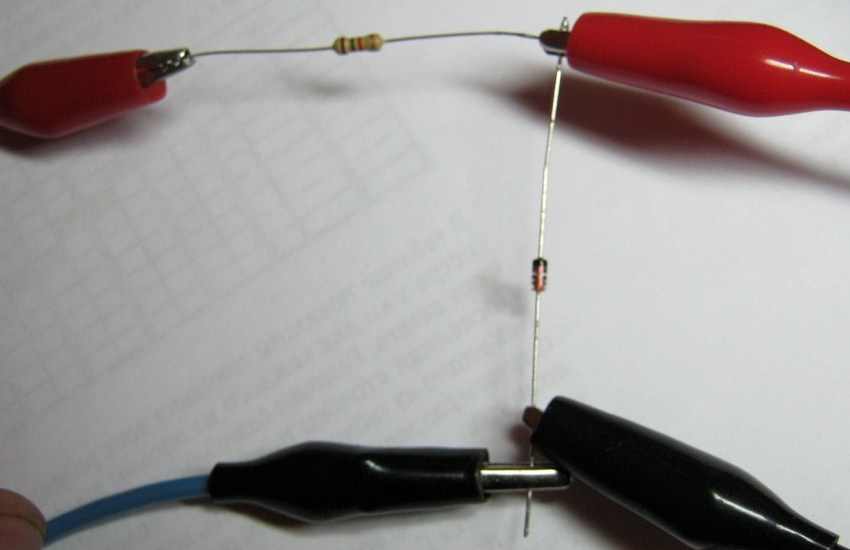
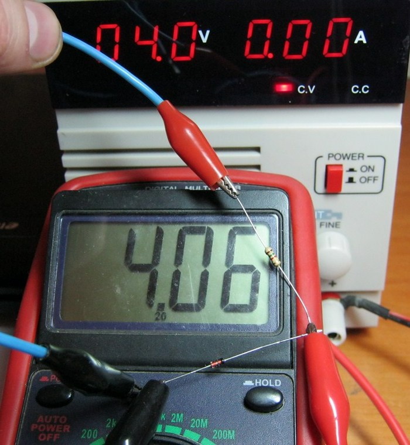
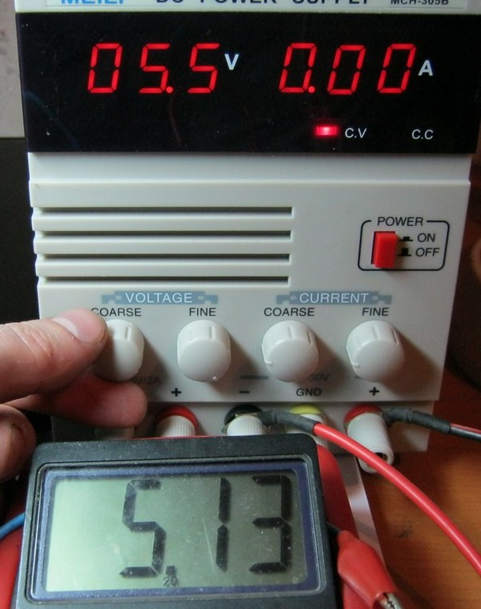
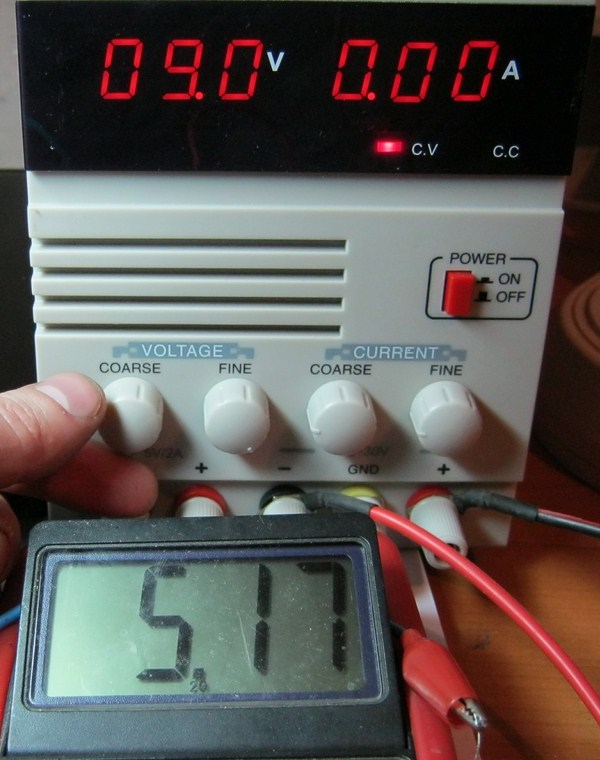
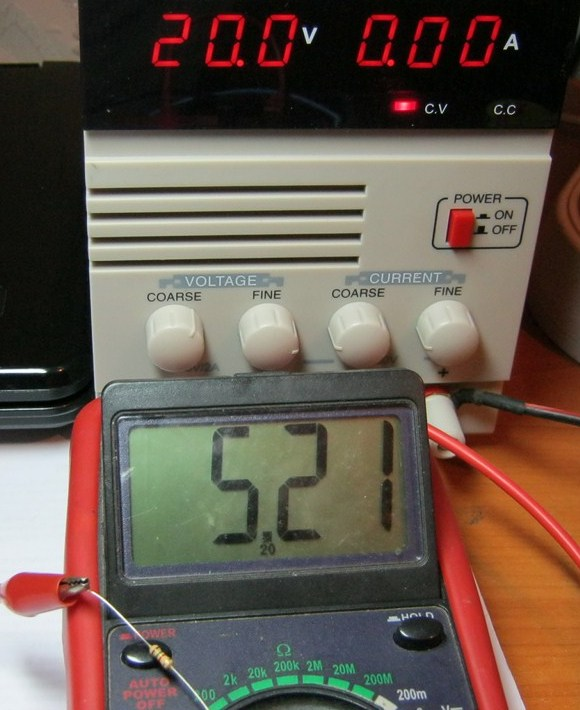

Исследование работы параметрического стабилизатора
Для исследования работы параметрического стабилизатора нам понадобятся:
- регулируемый источник питания;
- резистор номиналом в 1,5 кОм;
- стабилитрон с напряжением стабилизации 5,1 В (можно взять любой другой стабилитрон);
- мультиметр;
- соединительные провода.

Рис. 1 - Схема параметрического стабилизатора
Uвх - входное напряжение, Uвых.ст. - выходное стабилизированное напряжение
Рассмотрим схему параметрического стабилизатора (рис. 1). Резистор и стабилитрон образуют делитель напряжения: входное напряжение равняется сумме напряжений на стабилитроне и на резисторе:
Uвх= Uвых ст + UR.
Cоберем схему, взяв резистор номиналом в 1,5 кОм и стабилитрон на напряжение стабилизации 5,1 В (можно взять любой другой стабилитрон), как показано на рис. 2. Слева подаем напряжение от блока питания, а справа измеряем мультиметром полученное напряжение.

Рис. 2 - Подключение элементов для исследования
Изменяя входное напряжение следим за показаниями мультиметра и вольтметра блока питания. При подаче на схему напряжения 4 В выходное напряжение почти равно входному напряжению (рис. 3).

Рис. 3 - Выходное напряжение почти равно входному напряжению
При входном напряжении 5,5 В выходное напряжение равно 5,13 В. Так как напряжение стабилизации стабилитрона 5,1 В, то как мы видим, он прекрасно стабилизирует.

Рис. 4 - При Uвх=5,5 В выходное напряжение почти равно напряжению стабилизации
Добавим напряжение на выходе источника питания. Входное напряжение 9 В, а на стабилитроне 5,17 В.

Рис. 5 - При Uвх=9 В выходное напряжение почти равно напряжению стабилизации
Повышаем входное напряжение до 20 В, и на выходе получаем 5,2 В. Отклонение 0,1 В - это очень маленькая погрешность, которой в некоторых случаях пренебречь.

Рис. 6 - При Uвх=20 В выходное напряжение почти равно напряжению стабилизации
Источники:
hamlab.net - Стабилизаторы напряжения